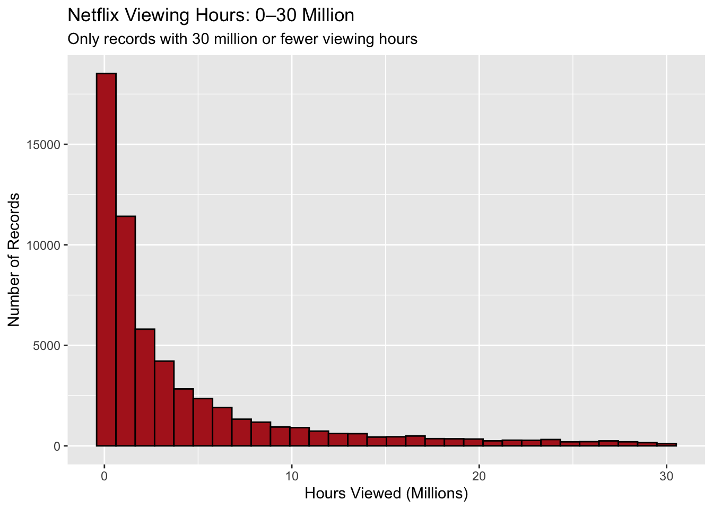
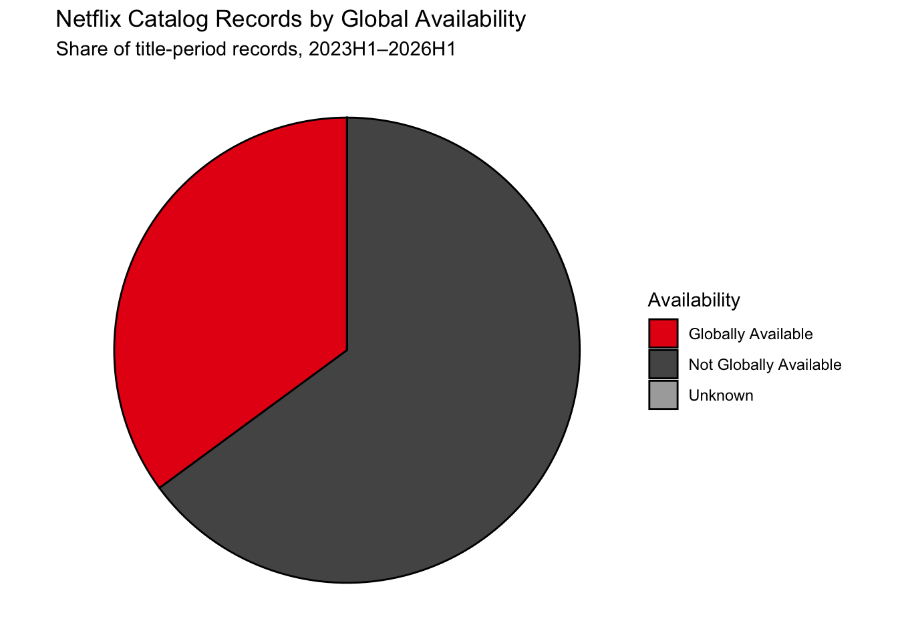
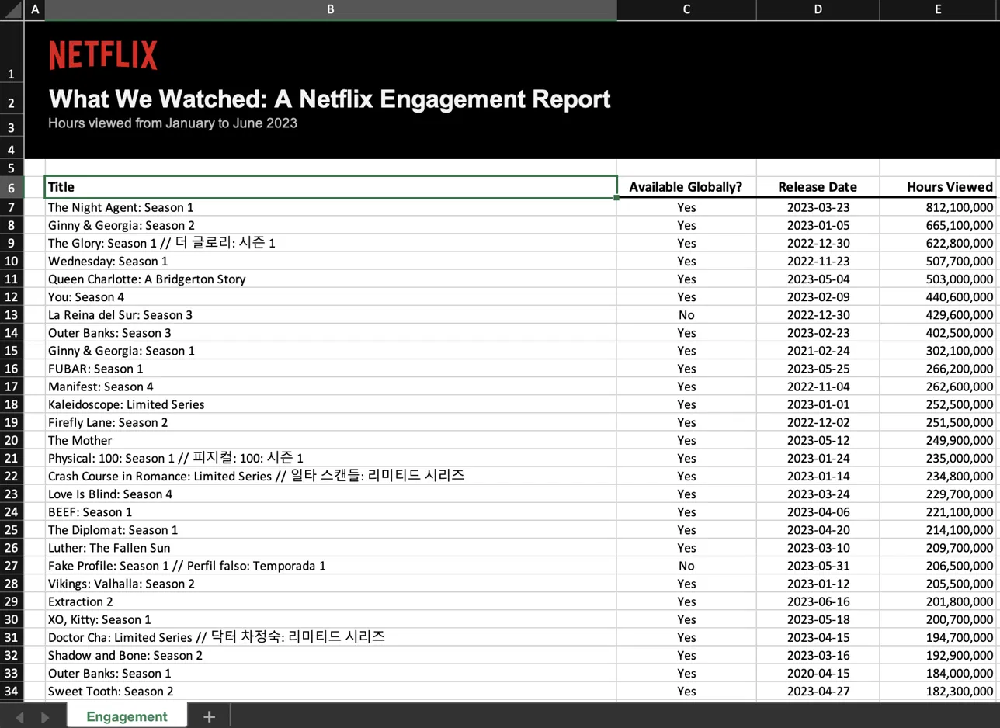
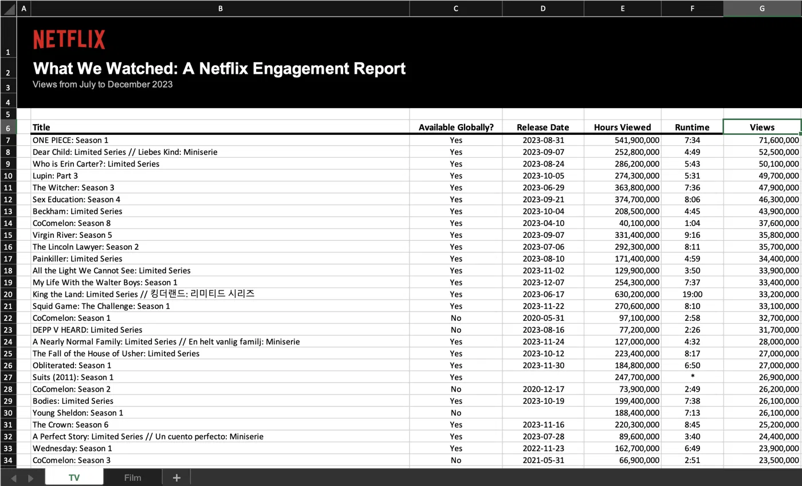

Mini-Project 01 - What We Watched: Exploring Netflix Viewing Data
Author
jonchan420
Introduction
Welcome to my first (graded) mini project! I intend to demonstrate my skills at Data Summarization/Exploratory Analysis/Table Formatting in an analysis of Media/Internet data. As you can tell, the project is Netflix themed, which I got color inspiration from another’s peer mini project 0
Netflix spent years gatekeeping its viewership data, however advertisers wanted proof people would actually see their ads, and creators wanted a piece of that pie, so since 2023 Netflix publishes a semi annual What We Watched report covering nearly majority of the data that Netflix can provide. In this mini project, I dug through seven of those reports to figure out what actually captures Netflix watch time, in which I turn into a strategy memo for Netflix to figure out how to spend their 2027 content budget.
Data Acquisition and Preparation
Code
#' Acquire Netflix What We Watched Reports#'#' This function will acquire and standardize all data for MP#01#' from Netflix. Because Netflix hosts the data files behind a CDN, we#' are accessing the release pages and automatically extracting links to the#' relevant files (with CDN hash).#'#' After import, files are stacked vertically and some basic cleaning is#' performed.load_netflix_data <-function() {library(tidyverse)library(rvest)library(readxl)library(fs) data_dir <-path("data", "mp01")if (!dir_exists(data_dir)) {dir_create(data_dir, showWarnings =FALSE, recurse =TRUE) } NETFLIX_URLS <-list(`2023H1`="https://about.netflix.com/news/what-we-watched-a-netflix-engagement-report",`2023H2`="https://about.netflix.com/news/what-we-watched-the-second-half-of-2023",`2024H1`="https://about.netflix.com/news/what-we-watched-the-first-half-of-2024",`2024H2`="https://about.netflix.com/news/what-we-watched-the-second-half-of-2024",`2025H1`="https://about.netflix.com/news/what-we-watched-the-first-half-of-2025",`2025H2`="https://about.netflix.com/news/what-we-watched-the-second-half-of-2025",`2026H1`="https://about.netflix.com/news/what-we-watched-the-first-half-of-2026" ) download_if_needed <-function(url, local) {if (!file_exists(local)) {download.file(url, local, quiet =TRUE, mode ="wb") }return(local) } NETFLIX_URLS |>map(read_html) |>map(html_element, xpath ="//a[contains(@href, '.xlsx')]") |>map_chr(html_attr, "href") |>enframe("period", "url") |>mutate(path =path(data_dir, paste0(period, ".xlsx")),path =map2(url, path, download_if_needed),data =map(path, read_excel, skip =3, na ="*"),data =map( data, \(x) x |>mutate(`Release Date`=as.Date(`Release Date`)) ) ) |>unnest(data) |>select(-url, -path) |>mutate(year =str_sub(period, 1, 4),half =str_sub(period, start =6),period_start =make_date(year, if_else(half ==1, 1, 7), 1),period_end =make_date( year,if_else(half ==1, 6, 12),if_else(half ==1, 30, 31) ) ) |>filter(!is.na(`Hours Viewed`)) |>mutate(live_event =!is.na(Runtime) &str_detect(Runtime, "\\d+:\\d+\\*"),clean_time =str_remove(Runtime, fixed("*")),Runtime =60*hour(hm(clean_time)) +minute(hm(clean_time)) ) |>select(-clean_time) |>mutate(Runtime =coalesce(Runtime, mean(Runtime, na.rm =TRUE)),.by = Title,Title = stringi::stri_trans_general(Title, "Latin-ASCII"),Title =str_remove(Title, " // .*"),Title =str_remove(Title, "[^[:ascii:]].*"),Title =str_trim(Title) ) |>filter_out(Title =="") |>select( year, period, period_start, period_end, Title,-half, Runtime, Views,`Hours Viewed`,`Release Date`,`Available Globally?`, live_event ) |>rename(title = Title,runtime = Runtime,views = Views,hours_viewed =`Hours Viewed`,release_date =`Release Date`,available_globally =`Available Globally?` ) |>mutate(year =as.integer(year),available_globally = available_globally =="Yes" )}NETFLIX_DATA <-load_netflix_data()
year period period_start period_end
Min. :2023 Length :61892 Min. :2023-01-01 Min. :2023-06-30
1st Qu.:2023 N.unique : 7 1st Qu.:2023-01-01 1st Qu.:2023-06-30
Median :2024 N.blank : 0 Median :2024-01-01 Median :2024-06-30
Mean :2024 Min.nchar: 6 Mean :2024-04-12 Mean :2024-10-10
3rd Qu.:2025 Max.nchar: 6 3rd Qu.:2025-07-01 3rd Qu.:2025-12-31
Max. :2026 Max. :2026-01-01 Max. :2026-06-30
title runtime views hours_viewed
Length :61892 Min. : 2.0 Min. : 100000 Min. : 100000
N.unique :24427 1st Qu.: 210.0 1st Qu.: 100000 1st Qu.: 500000
N.blank : 0 Median : 320.0 Median : 400000 Median : 1800000
Min.nchar: 1 Mean : 467.3 Mean : 1375241 Mean : 8265858
Max.nchar: 217 3rd Qu.: 545.0 3rd Qu.: 1200000 3rd Qu.: 6400000
Max. :23853.0 Max. :144800000 Max. :964100000
NAs :13085 NAs :18198
release_date available_globally live_event
Min. :2010-04-01 Mode :logical Mode :logical
1st Qu.:2019-05-31 FALSE:40171 FALSE:61582
Median :2021-06-17 TRUE :21719 TRUE :310
Mean :2021-03-25 NAs :2
3rd Qu.:2023-02-14
Max. :2026-06-29
NAs :35251
Code
skimr::skim(NETFLIX_DATA)
Data summary
Name
NETFLIX_DATA
Number of rows
61892
Number of columns
11
_______________________
Column type frequency:
character
2
Date
3
logical
2
numeric
4
________________________
Group variables
None
Variable type: character
skim_variable
n_missing
complete_rate
min
max
empty
n_unique
whitespace
period
0
1
6
6
0
7
0
title
0
1
1
217
0
24427
0
Variable type: Date
skim_variable
n_missing
complete_rate
min
max
median
n_unique
period_start
0
1.00
2023-01-01
2026-01-01
2024-01-01
7
period_end
0
1.00
2023-06-30
2026-06-30
2024-06-30
7
release_date
35251
0.43
2010-04-01
2026-06-29
2021-06-17
2487
Variable type: logical
skim_variable
n_missing
complete_rate
mean
count
available_globally
2
1
0.35
FAL: 40171, TRU: 21719
live_event
0
1
0.01
FAL: 61582, TRU: 310
Variable type: numeric
skim_variable
n_missing
complete_rate
mean
sd
p0
p25
p50
p75
p100
hist
year
0
1.00
2024.11
1.08
2023
2023
2024
2025
2026
▇▅▁▅▂
runtime
13085
0.79
467.35
694.71
2
210
320
545
23853
▇▁▁▁▁
views
18198
0.71
1375241.45
3630933.22
100000
100000
400000
1200000
144800000
▇▁▁▁▁
hours_viewed
0
1.00
8265858.27
24924226.03
100000
500000
1800000
6400000
964100000
▇▁▁▁▁
Missing Data
I noticed a lot of missing data when looking at the raw data.
Code
library(gt)# Apply a consistent style to every table: source note, bold headers, and dashes for missing values. This will make the tables prettier and more readable for the viewer to seestyle_table <-function(tbl) { tbl |>tab_source_note(md("Source: Netflix *What We Watched* reports, 2023H1–2026H1.")) |>opt_align_table_header(align ="left") |>tab_options(column_labels.font.weight ="bold") |>sub_missing(missing_text ="—")}NETFLIX_DATA |>summarize(release_date =sum(is.na(release_date)),views =sum(is.na(views)),runtime =sum(is.na(runtime)),available_globally =sum(is.na(available_globally)),hours_viewed =sum(is.na(hours_viewed)) ) |>gt() |>tab_header(title ="Missing Values by Variable" ) |>fmt_number(decimals =0) |>style_table()
Missing Values by Variable
release_date
views
runtime
available_globally
hours_viewed
35,251
18,198
13,085
2
0
Source: Netflix What We Watched reports, 2023H1–2026H1.
Source: Netflix What We Watched reports, 2023H1–2026H1.
Code
NETFLIX_DATA |>filter(hours_viewed <=30000000) |>ggplot(aes(x = hours_viewed /1000000)) +geom_histogram(bins =30, fill ="firebrick", color ="black") +labs(title ="Netflix Viewing Hours: 0–30 Million",subtitle ="Only records with 30 million or fewer viewing hours",x ="Hours Viewed (Millions)",y ="Number of Records" )

Went to next tuesday’s lecture to do this ### Global Availability
Source: Netflix What We Watched reports, 2023H1–2026H1.
Availability Visualization
Code
NETFLIX_DATA |>mutate(availability =if_else( available_globally,"Globally Available","Not Globally Available",missing ="Unknown" ) ) |>group_by(availability) |>summarize(records =n()) |>ggplot(aes(x ="", y = records, fill = availability)) +geom_col(width =1, color ="black") +coord_polar(theta ="y") +scale_fill_manual(values =c("Globally Available"="#E50914","Not Globally Available"="#555555","Unknown"="#AAAAAA" ) ) +labs(title ="Netflix Catalog Records by Global Availability",subtitle ="Share of title-period records, 2023H1–2026H1",fill ="Availability" ) +theme_void()

Went to next tuesday’s lecture to do this
Observations
These were my observations:
There are over 60k+ total records, 24k+ unique netflix titles, 7 reporting periods– the earliest being January 1, 2023 to June 30, 2026
There’s a lot of missing data I noticed (using skim() to see n_missing), with the most being the release dates. This may limit how we can analyze how viewership changes over time after a show releases (I am curious for certain anime’s like JoJo and see how batch releases compare to weekly releases)
Watch time is right skewed by a significant amount. Median hours are 1.8M while mean hours are 8.27M, almost 4.6 times the median. Maybe this means certain shows cough cough breaking bad cough that are very popular may be pulling up the average
Most records aren’t globally available. Only 21k+ records are globally available while 40k+ aren’t. I firsthand witnessed this when I noticed certain anime’s are japan exclusive (go figure). I want to investigate how the share of total viewing hours generated by global content against non global content
There are very few live events which only represent 0.5% of all records
In 2023H1, the report has about 18,000 titles filed under “Engagement”, but every later report has only 7,000. It seems starting in 2023H2, Netflix decided to split each excel file into separate TV and Film sheets. So after 2023H1, the movies are gone from the data, in which I kept in mind for every other comparison over time. I will refer to this as the 2023 Data Schism because it sounds funny and is important to note for certain analyses.

(a) 2023H1: one “Engagement” sheet

(b) 2023H2: separate TV and Film sheets
Figure 1: The 2023 Data Schism. Starting in 2023H2, Netflix splits each report into TV and Film sheets, and the loader reads only the first one.
Question 1: What date range is covered by this data set?
The data covers viewing from January 01, 2023 through June 30, 2026: 7 consecutive six-month windows or about 3.5 years
Question 2: How many different shows and movies are covered in this data set?
The reports include 24,427 distinct titles. Because Netflix lists each season separately, this counts Stranger Things 2 and Stranger Things 3 as different titles, so the number of distinct franchises is smaller.
Question 3: How many total hours have been spent watching shows from the Bridgerton universe?
After going down the Bridgerton rabbit hole, I discoered members spent 4.9B hours in the Bridgerton universe across 5 titles (Bridgerton: Season 1, Bridgerton: Season 2, Bridgerton: Season 3, Bridgerton: Season 4, and Queen Charlotte: A Bridgerton Story), not counting the fireplace video or the aftershow. That’s roughly 554,460 years of round-the-clock viewing, or several lifetimes of corsets!
Several lifetimes of corsets. Image: Netflix.
Question 4: How many total hours have been spent watching the five seasons of Stranger Things?
After excluding the behind-the-scenes companion show, the animated spin-off, and the fireplace video, the core series accounts for 5.5B hours across 5 titles (Stranger Things, Stranger Things 2, Stranger Things 3, Stranger Things 4, and Stranger Things 5).
Question 5: What percentage of total watch time was spent on the Top 10 titles of 2026H1?
The ten most-watched titles of 2026H1 captured 6.2% of that period’s watch time, led by Bridgerton: Season 4, Stranger Things 5, and Teach You a Lesson: Limited Series. Even the biggest hits are a small slice of a very large pie.
Question 6: What fraction of Netflix’s catalog is globally available? (Answer this both by title and weighted by hours viewed)
24.6% of distinct titles were available in every Netflix market, and those titles captured 52.1% of all hours viewed. Globally available titles therefore punch well above their weight, which fits the fact that most of them are Netflix originals that also receive the heaviest promotion.
Comparative Analysis
Question 1: What was the top title (by total hours viewed) in each period and what fraction of total viewership did it capture?
Source: Netflix What We Watched reports, 2023H1–2026H1.
No single title captured more than 1.4% of a period’s total watch time, even though Wednesday topped 960M hours (wow). Every period has a clear winner, with Squid Game claiming two periods, but the share of viewing is all between 0.9 and 1.4 percent. Although pretty small, that goes to show how many hours users watch across the world. The winners also seem to be all global series
Question 2: How has Netflix’s catalog changed in size over the periods for which we have data? You should consider both the number of titles and the total runtime of content.
Source: Netflix What We Watched reports, 2023H1–2026H1.
The number of reported titles fell from 18,126 in 2023H1 to 8,163 in 2026H1, and total watch time fell from 93.4B to 74.3B hours. At first I thought to blame HBO or Disney+ taking Netflix’s shows, but after looking over my data again, I realized it was because after 2023H1, they actually split the TV and Films, and our loader reads only the TV sheet. Looking at 2023H2 onward (TV only), the catalog actually grew from about 6,600 to 8,200 titles. Runtime totals are also incomplete in some periods (coverage as low as 31.8%), so they actually understated the true library size.
Question 3: Which titles have had the most consistently high viewership across all periods?
Just like when Jordan Belfort said “I never ask clients to judge me on my winners, I ask them to judge me on my losers, because I have so few”, one of the best judgements is when you observe something’s weak moments. A staple should be present in every report, should never fall far, and should be watched heavily even in its worst period. I therefore keep titles that appear in all 7 reports and rank them by their minimum half-year hours
Pablo Escobar, el patrón del mal: judged by its losers, and it doesn’t have any. Its worst six months would be most shows’ best. Image: Caracol Televisión.
Present in all seven periods; ranked by minimum hours viewed
Title
Average (M)
Minimum (M)
SD (M)
CV
Pablo Escobar, el patron del mal: Season 1
136.2
105.5
22.9
16.8%
Chiquititas (2013)
120.0
105.0
19.4
16.2%
Stranger Things 4
207.4
97.1
171.7
82.8%
Suits (2011): Season 1
126.9
80.9
59.2
46.7%
Breaking Bad: Season 2
91.6
78.5
12.0
13.1%
Suits (2011): Season 2
120.3
76.1
61.5
51.1%
Sam & Cat: Season 1
91.2
75.7
13.8
15.1%
Breaking Bad: Season 5
84.1
74.9
10.7
12.7%
Money Heist: Part 1
80.6
73.1
9.6
11.9%
Breaking Bad: Season 3
82.0
70.9
10.7
13.1%
Source: Netflix What We Watched reports, 2023H1–2026H1.
Only 3,540 titles appear in every report. Among them, Season 1 of Pablo Escobar is the standout staple, it never dropped below 105.5M hours in any six-month window and averaged 136.2M. 9 of the 10 are series, and 5 are globally available. Although results might be a little skewed from the 2023H1 data schism
Question 4: Within each period, what fraction of time was spent on ‘shows’ vs movies?
Share of each period's hours viewed, by content type
Period
Series
Film/Special
Live Event
Unclassified
2023H1
70.6%
1.5%
0.0%
27.9%
2023H2
97.6%
1.9%
0.0%
0.5%
2024H1
97.4%
1.6%
0.0%
1.0%
2024H2
97.1%
1.8%
0.3%
0.7%
2025H1
97.5%
1.5%
0.4%
0.6%
2025H2
96.3%
1.6%
0.3%
1.8%
2026H1
96.1%
1.5%
0.5%
1.9%
Source: Netflix What We Watched reports, 2023H1–2026H1.
Series dominate movies by a pretty wide margin. They accounted for 71.0% of watch time in 2023H1, the only period that includes films; thanks to the 2023 Data Schism, later periods are TV-only, so their higher shares aren’t comparable. The three most-watched titles it labels as films in 2026H1 are The Roast of Kevin Hart, Unicorn Academy: Secrets Revealed: Chapter 1, and The Creature Cases: Chapter 7.
Question 5: How does the performance of live events compare to pre-taped content? Does the average live event draw more viewership than an average piece of pre-taped content? How about a ‘top tier’ live event vs ‘top tier’ pre-taped content?
Only periods containing live events; views in millions
Content Type
Records
Average Views (M)
Top 10 Average (M)
Most Viewed Title
Top Views (M)
Live Event
310.0
1.5
11.3
Jake Paul vs. Mike Tyson
48.9
Pre-recorded
29,992.0
1.3
101.7
Adolescence: Limited Series
144.8
Source: Netflix What We Watched reports, 2023H1–2026H1.
On average, a live event drew 1.5M views versus 1.3M for pre-recorded titles, so the average live event comes out slightly ahead. At the top tier it isn’t close: the ten biggest pre-recorded titles averaged 101.7M views, compared with 11.3M for the ten biggest live events. Live events hit singles; scripted shows hit the home runs.
Extra Credit: Gini Coefficient Analysis
Code
# Calculate the Gini coefficientgini <-function(x) { x <-sort(x[!is.na(x)]) n <-length(x)if (n ==0||sum(x) ==0) {return(NA_real_) }2*sum(seq_len(n) * x) / (n *sum(x)) - (n +1) / n}# combine records belonging to the same title and periodtitle_period_data <- NETFLIX_DATA |>group_by(period, title) |>summarize(hours_viewed =sum(hours_viewed),views =if (all(is.na(views))) {NA_real_ } else {sum(views, na.rm =TRUE) },.groups ="drop" )# compare inequality across reporting periodsgini_results <- title_period_data |>group_by(period) |>summarize(titles =n(),gini_hours =gini(hours_viewed),gini_views =gini(views),view_coverage =mean(!is.na(views)),.groups ="drop" )gini_results |>gt() |>tab_header(title ="Netflix Viewership Inequality by Reporting Period",subtitle ="Gini coefficients based on viewing hours and estimated views" ) |>cols_label(period ="Period",titles ="Titles",gini_hours ="Gini: Hours",gini_views ="Gini: Views",view_coverage ="Views Available" ) |>fmt_number(columns = titles, decimals =0) |>fmt_percent(columns =c(gini_hours, gini_views, view_coverage),decimals =1 ) |>style_table()
Netflix Viewership Inequality by Reporting Period
Gini coefficients based on viewing hours and estimated views
Period
Titles
Gini: Hours
Gini: Views
Views Available
2023H1
18,126
81.4%
—
0.0%
2023H2
6,574
73.7%
70.0%
100.0%
2024H1
6,775
74.2%
70.3%
100.0%
2024H2
6,854
74.6%
70.8%
100.0%
2025H1
7,473
75.0%
71.8%
100.0%
2025H2
7,712
74.9%
71.1%
100.0%
2026H1
8,163
75.5%
70.9%
100.0%
Source: Netflix What We Watched reports, 2023H1–2026H1.
memo_fmt_big <- scales::label_number(scale_cut = scales::cut_short_scale(),accuracy =0.1)memo_first <- memo_periods[1]memo_tv_first <- memo_periods[2]memo_latest <-max(memo_periods)memo_total_hours <-sum(NETFLIX_DATA$hours_viewed)# gini values from the gini-analysis chunkg_tv_first <-filter(gini_results, period == memo_tv_first)g_latest <-filter(gini_results, period == memo_latest)# concentration in the latest periodtop_share <-function(x, k) sum(head(sort(x, decreasing =TRUE), k)) /sum(x)memo_conc <- NETFLIX_DATA |>filter(period == memo_latest) |>summarize(hours =sum(hours_viewed), .by = title) |>summarize(top1_share =top_share(hours, ceiling(0.01*n())),top10_share =top_share(hours, 10),beyond100_share =1-top_share(hours, 100))# global vs regionalmemo_global <- NETFLIX_DATA |>filter(period == memo_latest, !is.na(available_globally)) |>summarize(title_share =mean(available_globally),hours_share =sum(hours_viewed[available_globally]) /sum(hours_viewed))memo_global_multiple <- NETFLIX_DATA |>filter(!is.na(available_globally)) |>summarize(avg_hours =mean(hours_viewed), .by = available_globally) |>summarize(ratio = avg_hours[available_globally] / avg_hours[!available_globally]) |>pull(ratio)# Series vs films in the first period (the only one with both)memo_first_types <- NETFLIX_DATA |>filter(period == memo_first) |>mutate(content_type =case_when( live_event ~"Live Event",str_detect(title, "Season|Series") ~"Series",!is.na(runtime) & runtime >240~"Series",.default ="Other" ))memo_series_share <-with(memo_first_types,sum(hours_viewed[content_type =="Series"]) /sum(hours_viewed))memo_leader_first <-slice_max(memo_first_types, hours_viewed, n =1,with_ties =FALSE)# most dependable title memo_staple <- NETFLIX_DATA |>summarize(hours =sum(hours_viewed), .by =c(title, period)) |>summarize(n_periods =n(), min_hours =min(hours), .by = title) |>filter(n_periods ==length(memo_periods)) |>slice_max(min_hours, n =1, with_ties =FALSE)# live vs pre-recorded TVmemo_live_periods <- NETFLIX_DATA |>filter(live_event) |>distinct(period) |>pull(period) |>sort()memo_live_trend <- NETFLIX_DATA |>filter(period %in% memo_live_periods) |>summarize(live_share =sum(hours_viewed[live_event]) /sum(hours_viewed),.by = period) |>arrange(period)memo_live_start <-slice_head(memo_live_trend, n =1)memo_live_end <-slice_tail(memo_live_trend, n =1)memo_live <- NETFLIX_DATA |>filter(period %in% memo_live_periods, !is.na(views)) |>summarize(mean_views =mean(views),top10_views =mean(head(sort(views, decreasing =TRUE), 10)),.by = live_event)memo_live_row <-filter(memo_live, live_event)memo_tape_row <-filter(memo_live, !live_event)
Interpretation
The 2023H1 Gini (81.4%) is higher than later periods because that report includes films, while later reports in our data contain only the TV sheet. Comparing TV-only periods, the hours-based Gini rose from 73.7% in 2023H2 to 75.5% in 2026H1, so TV viewing has become slightly more concentrated in hits.
Final Insights and Deliverable
Dear Netflix
My name is Jonathan Chan, a Data Analyst from Weylandt Consulting and Analytics. I’ve analyzed your data, seven of Netflix’s “What We Watched” reports, covering 511.6B hours of viewing from the first half of 2023 to the first half of 2026. Five patterns stood out to me, and I think each should shape how we spend in 2027
1. Invest in a few big hits, but keep a deep catalogue
Viewing is pretty uneven across titles on your platform. To measure this, I used the Gini coefficient, which economists use to measure inequality. It runs from 0%, where every title gets the same amount of viewing, to 100%, where one title gets all of it. Among TV titles, the score moved from 73.7% in 2023H2 to 75.5% in 2026H1, so viewing has become slightly more concentrated in the biggest shows (think of ONE PIECE or King The Land or Bridgerton). Adjusted for runtime, the 2026H1 score is 70.9%. In 2026H1:
The top 1% of titles captured 22.2% of watch time.
The ten biggest titles accounted for only 6.7%.
Titles outside the top 100 still made up 75.5% of viewing.
The big franchises are worth it: Stranger Things (keep milking it!) alone has generated 5.5B hours. I’d recommend putting our largest budgets behind a few potential franchises while keeping a consistent flow of mid-budget titles between major releases.
2. Make new Originals available worldwide
In 2026H1, titles available in every country made up 38.2% of the TV catalog but captured 49.1% of TV watch time. Across all periods, the average worldwide title drew 2.0 times the hours of one licensed only in certain regions. I recommend securing worldwide rights for every original at greenlight and using regional licensing only to fill market-specific gaps (there may be a slight bias from Dragon Ball Super Beerus being in Netflix JP and not global).
3. Keep TV series at the center
Movies are great and all, but in 2023H1, the only report in our data that includes both TV and film, series accounted for 70.6% of watch time, compared with 29.4% for films, specials, and unclassified titles. The most-watched title was The Night Agent: Season 1, generating 812.1M hours.
Long-running series are also our most dependable titles. Pablo Escobar, el patron del mal: Season 1 appeared in every report and never dropped below 105.5M hours in any six-month period.
For 2027, I’d prioritize serialized originals and renewals with strong baselines, using films to hold interest between seasons. Views aren’t profit, though, so production costs and subscriber retention should weigh in too.
4. Plan around the launch rush
Most viewing happens soon after release. I followed 238 titles released in the final month of a reporting period into the next report. Their launch window (only the days between release and the period’s end, a median of 19 days) captured a median of 60.0% of their combined viewing across both reports, versus 9.4% if viewing were spread evenly. Per day, the launch window ran 16.9 times higher than the following six months.
I recommend concentrating marketing around release dates. Whether nearby premieres steal viewers from each other is worth testing next.
5. Use live events selectively
Live programming went from 0.3% of watch time in 2024H2 to 0.5% in 2026H1, still a very small share of viewing.
The average live event drew 1.5M views, compared with 1.3M for the average pre-recorded TV title.
The biggest pre-recorded titles far outdrew the biggest live events: the top ten averaged 101.7M views, compared with 11.3M for the top ten live events.
I recommend a small number of high-profile live events, valued for attracting subscribers and advertisers rather than for replacing scripted hits. From what I’ve seen personally, the younger end of Gen Z loves live events with stakes.
Limitations
After 2023H1, our data includes only Netflix’s TV sheet, so film comparisons rely on 2023H1 alone and trends over time describe TV viewing.
Only titles with English-character names are included.
Netflix rounds hours to the nearest 100,000 and leaves out very small titles.
Views are estimated by dividing hours watched by runtime.
My split between series and films is based on a rule of thumb.
Even so, I don’t expect these gaps to change the overall conclusions, because the main patterns hold within every period that can be fairly compared.
NoteAI Usage Statement
AI disclosure, I used ChatGPT to help format the css for this project to get Netflix themed fonts and colors. I also used Claude for the Gini coefficient math but i drew the conclusion from it myself. After my first run through, I asked Claude to compare my work to the rubric and so I had it make the variables for me after i realized i shouldn’t hard code the numbers in my comparative analysis’s, so i can copy and paste them into the memo I’d write myself.